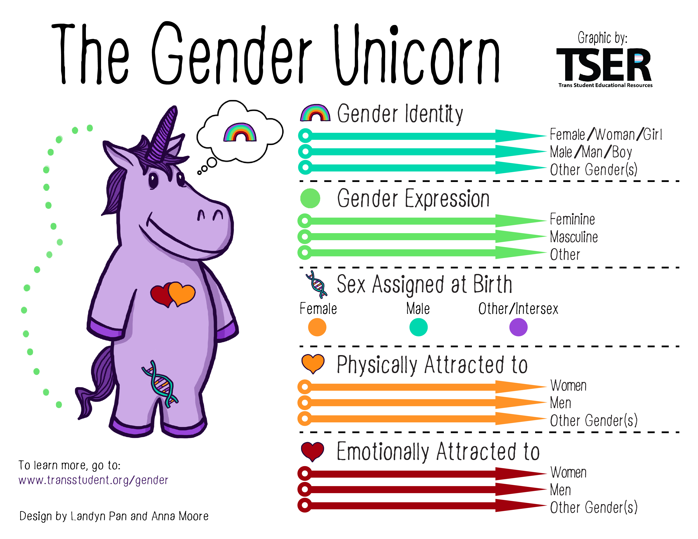
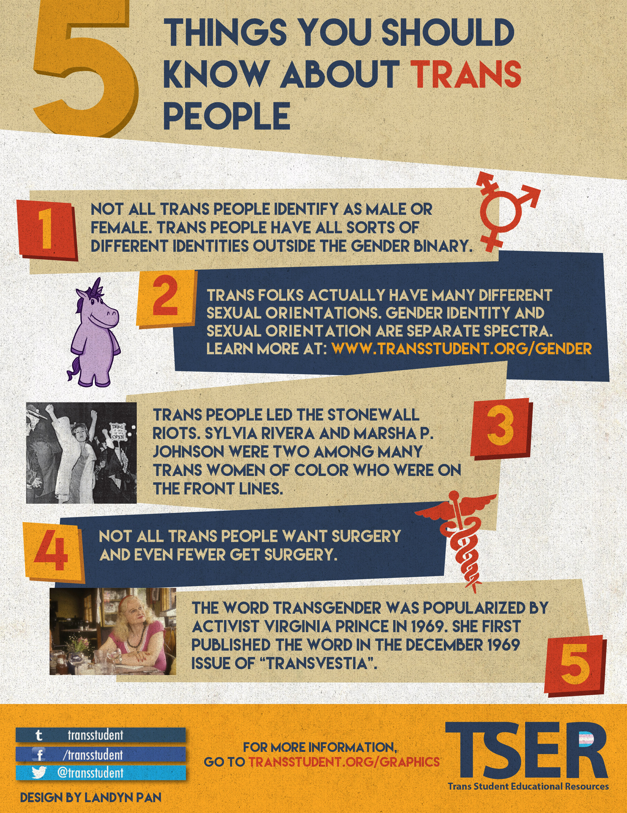
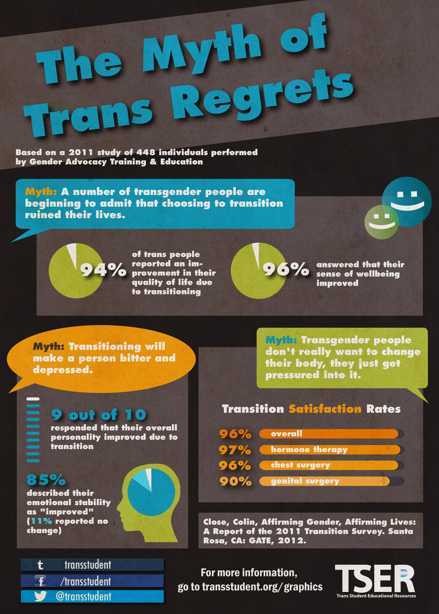

Gender, Sex, and Sexuality
The Gender Unicorn

Gender Pronouns
| Subjective | Objective | Possessive | Reflexive | Example |
|---|---|---|---|---|
| She | Her | Hers | Herself | She is speaking. I listened to her. The backpack is hers. |
| He | Him | His | Himself | He is speaking. I listened to him. The backpack is his. |
| They | Them | Theirs | Themself | They are speaking. I listened to them. The backpack is theirs. |
| Ze | Hir/Zir | Hirs/Zirs | Hirself/Zirself | Ze is speaking. I listened to hir. The backpack is zirs. |
| NOTE: This does not cover all of the pronouns. The whole point of pronouns is to give people a way to express themselves in a way that they think is best, so a person may choose different pronouns from the ones above. | ||||
Recreated from a graphic by Landyn Pan, Trans Student Educational Resources. "Gender Pronouns."
Gender Terminology
| Problem | Correction | Reason |
|---|---|---|
| "transgendered" (adjective) | transgender | Only adjectives that are derived from nouns and/or verbs (unlike transgender) end in "-ed." |
| "intersexed" | intersex | Only adjectives that are derived from nouns and/or verbs (unlike transgender) end in "-ed." |
| "transgendered" (verb) | transition | Only verbs can have "-ed" added onto the end of the word to become a participle. Transgender is an adjective, not a verb. One does not "transgender," they transition. |
| "a transgender" "transgenders" | a transgender person transgender people | Transgender is not a nount. "Jake is a transgender" is not only grammatically incorrect, but can be offensive. |
| "sex change" "sex reassignment surgery" "gender reassignment surgery" | gender affirming surgery genital reconstruction surgery genital reassignment surgery | Surgery does not change one's sex or gender, only their genitalia. |
Trans

